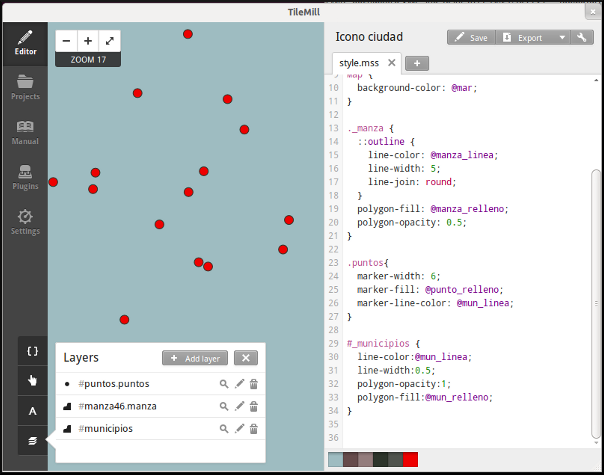
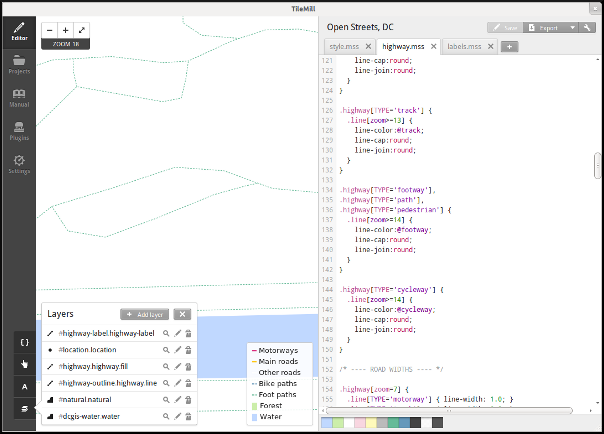
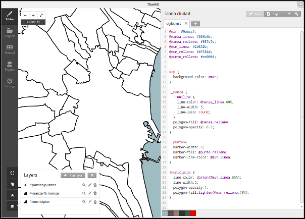
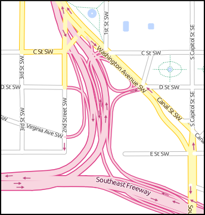

5. Qué es TileMill¶
Note
Autores:
- Pedro-Juan Ferrer @vehrka · pferrer@osgeo.org
- Iván Sanchez @realivansanchez · ivan@sanchezortega.es
- Santiago Tramoyeres @santracraus
Licencia:
Excepto donde quede reflejado de otra manera, la presente documentación se halla bajo licencia Creative Commons Reconocimiento Compartir Igual
TileMill es un herramienta que permite un acercamiento al diseño cartográfico a través de un lenguaje que es familiar a los desarrolladores web.
Sirve para que incluso un diseñador web pueda hacer mapas bonitos.
5.1. ¿Por qué mis mapas han de ser bonitos?¶
Vamos, no fastidies, estás hablando con un cartógrafo.
Bueno, no tienen porqué serlo ...
... pero venden más :)
Algunos ejemplos de mapas hechos con TileMill.

5.2. Añadiendo datos¶
El primer paso siempre es añadir datos y el primer paso para añadirlos es tener claros sus metadatos, en especial:
- Su Formato
- Su Tamaño
- y su Sistema de referencia
5.2.1. Vectores¶
- CSV
- Shapefile
- KML
- GeoJSON
5.2.2. Raster¶
- GeoTIFF
5.2.3. Bases de datos¶
- SQLite
- PostGIS
5.3. Introducción al lenguaje Carto¶
Carto es el lenguaje que utiliza TileMill para aplicar estilos a las primitivas cartográficas.
Está basado en Cascadenik que es un pre-procesador de estilos para Mapnik.
Mapnik solo entiende XML pero poca gente entiende XML así que aparecieron pre-procesadores para hacer “la vida más fácil” a los usuarios de Mapnik.
TileMill usa Mapnik por debajo y Carto es el lenguaje con el que le comunica como deben quedar las cosas.
5.3.1. Pintando puntos¶
#puntos{
marker-width: 2;
marker-fill: #EE0000;
marker-line-color: #FFFABB;
}
Existen dos tipos de puntos Point y Marker entre los dos suman 24 propiedades.
{kind=link}
5.3.2. Pintando lineas¶
#linea {
line-color: #c0d8ff;
line-cap: round;
line-join: round;
}
Existen 11 propiedades distintas para las ĺíneas.
{kind=link}
5.3.3. Pintando áreas¶
#areas {
line-color: #FFFABB;
line-width: 0.5;
polygon-opacity: 1;
polygon-fill: #6B9;
}
Existen 5 propiedades distintas para las áreas.
{kind=link}
5.3.4. Pintando con clase¶
Para el que se lo haya preguntado ... también se pueden usar clases (y condiciones)
.natural[TYPE='water'],
.water {
polygon-fill:#c0d8ff;
}
.natural[TYPE='forest'] {
polygon-fill:#cea;
}
5.3.5. Y alguna cosilla más¶
El uso de @ te permite definir variables
@water:#c0d8ff;
@forest:#cea;
Y los selectores se pueden anidar
.highway[TYPE='motorway'] {
.line[zoom>=7] {
line-color:spin(darken(@motorway,36),-10);
line-cap:round;
line-join:round;
}
.fill[zoom>=10] {
line-color:@motorway;
line-cap:round;
line-join:round;
}
}
5.4. Más sobre el lenguaje Carto¶
5.4.1. Usando iconos como marcadores¶
Por ejemplo para pintar puntos de interes
.amenity.place[zoom=15] {
[type='police']{
point-file: url(../res/comi-9px.png);
}
[type='fuel'] {
point-file: url(../res/petrol-9px.png);
}
[type='townhall'],
[type='university'] {
point-file: url(../res/poi-9px.png);
}
}
{kind=link}
5.4.2. Pintando cajas de carretera¶
.highway[TYPE='motorway'] {
.line[zoom>=7] {
line-color:spin(darken(@motorway,36),-10);
line-cap:round;
line-join:round;
}
.fill[zoom>=10] {
line-color:@motorway;
line-cap:round;
line-join:round;
}
}
.highway[zoom=13] {
.line[TYPE='motorway'] { line-width: 2.0 + 2; }
.fill[TYPE='motorway'] { line-width: 2.0; }
}
¿No sabes lo que es una caja de carretera?
{kind=link}
5.5. Exportando los mapas¶
- PNG
- MBTiles
- SVG
5.5.1. Montando un TMS¶
Pasar de MBTiles a una estructura de directorios para TMS usando mbutil
$ mb-util exportado.mbtiles directorio/
{kind=link}